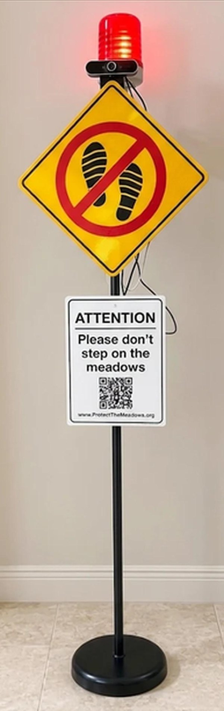
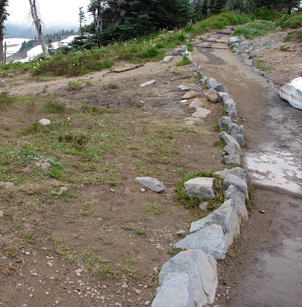
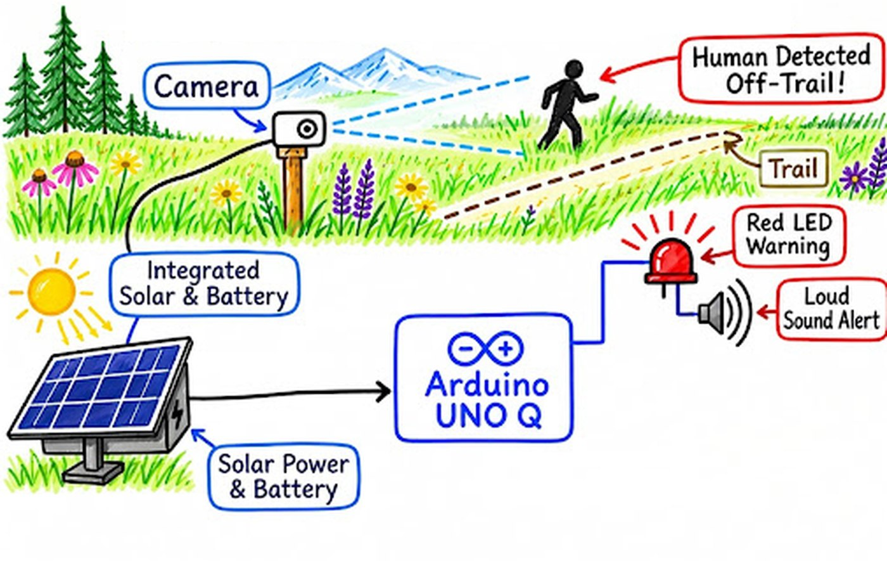

Our innovation project
Meet MeadowGuard
A smart warning sign that protects meadows and biodiversity.
- A red warning light on top
- A camera that watches for people
- A "no stepping" sign anyone can understand
- A QR code that leads to this website
A smart warning sign that protects meadows and biodiversity.

Visitors who walk off the trail damage meadows. That hurts biodiversity: the variety of plants, insects, birds and animals living in a place.
The National Park Service says each off-trail footfall damages multiple plants, and trampled soil can be packed too hard for plants to grow.

A camera watches the edge of the trail and takes a picture every 5 seconds.
An Arduino UNO Q uses object detection to look for a person. No one there? It keeps watching.
A red light flashes and a sound warns the visitor to stay on the trail.

| Part | What it does |
|---|---|
| Arduino UNO Q (4GB) | The brain. It runs object detection and controls the warning. |
| USB webcam | Takes the pictures |
| Powered USB hub and 5V 3A adapter | Connects the camera and powers the board |
| Red warning light and sound | Gets the visitor's attention |
| LEDs, resistors, breadboard, wires | Build the circuit |
| Sign, pole, stand, QR card | Hold everything and share the message |
| Upgrade: solar panel and battery | Power out on the trail |
Wildflowers get only a few weeks a year to grow. See the numbers and try the trail yourself.